🎨✨ Art and Handicrafts of Arunachal Pradesh – A Symphony of Tradition and Nature 🖌️🧵
🖼️ Traditional Art Forms – Stories on Canvas

Tangkha Painting 🖼️
Traditional Buddhist scroll paintings on cotton or silk, depicting deities and spiritual themes.
Rich colors and intricate detailing reflect religious devotion and artistic excellence.
Khamba Wall Murals 🎨
Large wall murals found in monasteries and homes.
Theme: Reflects stories from Buddhist mythology and nature.
Large wall murals found in monasteries and homes.
Theme: Reflects stories from Buddhist mythology and nature.

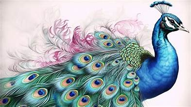
Merak Painting 🖌️
An ancient painting style by the Monpa tribe using natural dyes.
Theme: Depicts Buddhist deities and mythological tales.
An ancient painting style by the Monpa tribe using natural dyes.
Theme: Depicts Buddhist deities and mythological tales.
Wall Paintings of Monpa Tribes 🎨
Murals and frescoes with vibrant colors narrating stories from Buddhist texts and folklore.
Themes of harmony, spirituality, and divine power are reflected beautifully.
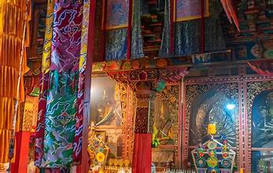
🪡 Handicrafts – Wonders of Indigenous Craftsmanship
Bamboo and Cane Craft 🎋
Beautifully handcrafted baskets, mats, and household items using bamboo and cane.
Known for their intricate weaving, utility, and durability.
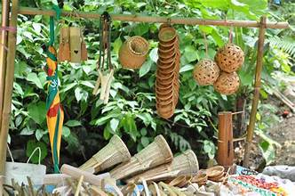

Wooden Carvings 🪵
Exquisite wooden carvings featuring mythological figures, masks, and totems.
Crafted with finesse by local artisans, showcasing ancestral skills.
Carpet Weaving by Monpa Tribe 🧶
Handwoven woolen carpets with intricate geometric and floral patterns.
Traditional techniques passed down generations make each piece unique.
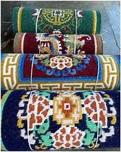
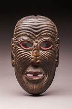
Monpa Mask Craft 🎭
Handmade masks carved from wood and painted vibrantly, used in traditional dances and rituals.
Depicts deities, demons, and mystical beings.
Tawang Stone Sculptures ⛏️
Intricate carvings depicting Buddhist deities and motifs.
Found in monasteries and temples.
Intricate carvings depicting Buddhist deities and motifs.
Found in monasteries and temples.


Shergaon Wood Carving 🪵
Exquisite wood carvings with mythological themes.
Used to decorate temples and homes.
Exquisite wood carvings with mythological themes.
Used to decorate temples and homes.
🧺 Weaving and Textiles – Threads of Elegance
Apatani Weaving 🌾
Intricate handwoven textiles by the Apatani tribe, known for their bold colors and geometric designs.
Sarees, shawls, and garments that reflect traditional heritage.
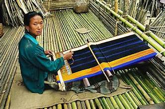
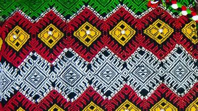
Mishmi Textiles 🧣
Vibrant handwoven fabrics with bright hues and unique motifs.
Crafted with precision and love, reflecting the tribe’s connection to nature.
Nishi Tribal Weaving 🧵
Bold geometric patterns with vibrant hues.
Used for ceremonial wear and daily use.
Bold geometric patterns with vibrant hues.
Used for ceremonial wear and daily use.


Sherdukpen Weaving 🧶
Handwoven garments with elaborate designs.
Worn by Sherdukpen men and women.
Handwoven garments with elaborate designs.
Worn by Sherdukpen men and women.
🛕 Stone and Metal Craft – Sculpting Spirituality
Monpa Stone Carving ⛏️
Beautiful carvings on stones and clay, used in monasteries and religious structures.
Reflects devotion and artistic prowess.
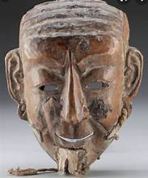

Thangka Metal Craft 🛕
Elegant brass and metal artifacts showcasing Buddhist deities and symbols.
Used in monasteries, rituals, and home decor.
🎸 Musical Instruments – Echoes of Tradition
Pempa Drum 🪘
Traditional wooden drum used in festivals and religious ceremonies.
Produces rhythmic beats that resonate with spiritual essence.

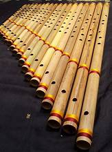
Bamboo Flute 🎵
Melodious bamboo flute handcrafted by tribal artisans.
Used in traditional folk music and spiritual practices.
🧺 Eco-Friendly and Sustainable Crafts
Cane and Bamboo Crafts 🍃
Beautiful eco-friendly items such as trays, baskets, and mats, woven with precision.
Promotes sustainability and supports local artisans.
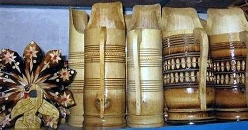
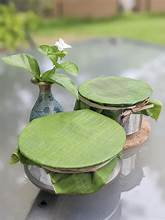
Leaf Plate Craft 🍂
Eco-friendly plates and containers made from dried leaves.
Used for community feasts and ceremonies.